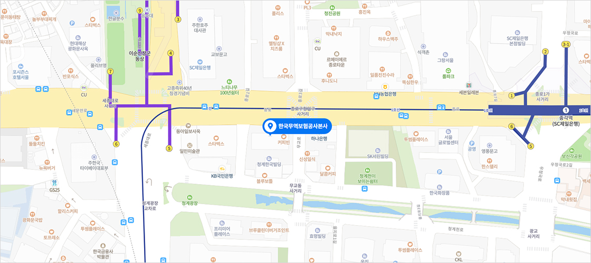

국내지사
- 중앙지사
- 강남지사
- 부산지사
- 대구경북지사
- 인천지사
- 반월시화지사
- 광주전남지사
- 대전세종충남지사
- 울산지사
- 경기남부지사
- 경기북부지사
- 강원지사
- 충북지사
- 전북지사
- 경남지사
- 구로디지털지사
- 제주지사
- 천안출장소

인천시 연수구 갯벌로 12 (송도동) 미추홀타워 본관 13층 (우 21999)
- 고객센터 : 1588-3884 / 팩스 : 032-422-2718
- 근무시간 : 평일 09:00~18:00, 토/일 및 주중 공휴일 : 휴무
지사안내
- 관할지역 : 인천광역시 및 인근 경기도 지역
- 혼잡 요일 및 시간 : 매일 13:00 : 16:00
- 위치 : 인천지사는 인천시 연수구 송도동에 위치하고 있으며, 인천지하철 1호선 테크노파크역 4번 출구에서 도보 5분 거리인 미추홀타워 본관 13층에 있습니다.
-
업무
- 수출입자 신용조사
- 담보력이 부족한 중소기업에 대한 수출신용보증(선적전, 선적후)
- 수출대금 미회수 위험을 커버해주는 수출보험
- 환율하락에 대비한 환변동보험의 인수 및 보상심사
교통안내
※ 자세한 길찾기는 지도 우측 하단의 ‘카카오 길찾기’를 클릭해주세요.
지하철
-
1테크노파크역 4번 출구에서 도보 5분 거리인 미추홀타워 본관 13층에 있습니다.버스
-
인천대미래관
-
간선6-1
-
자가용-
남동IC (제2경인고속도로) 진출시
- 안양,광명방향/서울외곽순환고속도로 → 광명IC → 안현JC → 신천IC → 서창JC → 남동IC (남동로방향) → 남촌낚시터 → 남동공단 → 고잔사거리 → 고가차도(송도1교) 밑에서 좌회전 → 약 1km 직진 → 인천테크노파크
-
문학IC (제2경인고속도로) 진출시
- 안양,광명방향/서울외곽순환고속도로 → 광명IC → 안현JC → 신천IC → 서창JC → 남동IC → 문학IC → 문학터널 (유료요금) → 청학사거리 직진 → 송도2교 → 해양경찰청 → 송도파크호텔 사거리 좌회전 → 약 1km 직진 → 인천테크노파크
-
고잔TG (제3경인고속도로) 진출시
- 목감IC → 도리JC → 연성IC → 월곶JC → 정왕IC → 고잔 톨게이트 → 고잔사거리 → 고가차도(송도1교) 밑에서 좌회전 → 약 1km 직진 → 인천테크노파크
-
인천공항 출발
- 인천공항 → 신불IC → 공항신도시IC → 공항IC → 인천대교 고속도로 → 연수JC → 송도IC → 송도2교 우회전 → 해양경찰청 → 송도파크호텔 사거리 좌회전 → 약 1km 직진 → 인천테크노파크
-
담당자 안내
중앙지사/중견기업팀
※ 담당자와 통화를 원하실 경우 고객센터(1588-3884)를 이용하여 주시기 바랍니다.
| 담당자 | 담당업무 |
|---|---|
| 지사장 김준호 |
|
| 책임심사역 최완규 |
|
| 변상현 |
|
| 이희진 |
|
| 권소희 |
|
| 김현솔 |
|
| 박소라 |
|
| 최영선 |
|
| 정다은 |
|